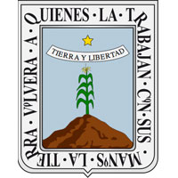

Del año 200 d.C. a 500 d.C. La cultura olmeca habitó el territorio hoy conocido como estado de Morelos. La gran influencia de esta cultura se dejó sentir en todo mesoamérica. Tiempo después, a partir del año 650 d.C. la cultura del altiplano central, resultado de las influencias maya, teotihuacana y mixteca-zapoteca. En el siglo XIII los xochimilcas fundaron Tepoztlán, Tetela del Volcán, Hueyacapan y Xumiltepec. En el norte los tlahuicas fundaron Cuauhnahuac, la actual Cuernavaca. Sin embargo con el florecimiento del imperio mexica, estos comenzaron a extender su dominio y el territorio comprendido por estas tribus fue sometido a tributación del gran imperio controlado por Tenochtitlán. La conquista del territorio que comprende Morelos por parte de los conquistadores al mando de Hernán Cortés era parte de la estrategia para conseguir el fin último, la caída de la Gran Tenochtitlán. Y tal como fue previsto, después de algunas cruentas luchas y otras pacíficas entregas, el territorio cayó en manos españolas y sirvió de corredor hacia la capital del imperio mexica en 1521.El territorio morelense se encuentra dentro de dos provincias fisiográficas: el Eje Neovolcánico al norte, la otra provincia es la Depresión del Balsas. Ubicado en un entorno más amplio, Morelos se encuentra en la parte más alta de la Cuenca del Río Balsas, la cual limita al norte con la Sierra Ajusco - Chichinautzin y el Volcán Popocatépetl. Desde ahí hacia el sur, se inicia un suave pero continuo descenso, interrumpido por las sierras de Tlaltizapan y Yautepec en el centro del estado y por la de Huautla en el extremo sur. Los fuertes contrastes de clima y vegetación conforme disminuye la altitud permiten disfrutar dentro de los límites del estado paisajes tan distintos como el pastizal de alta montaña y nieves perpetuas en el volcán Popocatépetl en el norte, hasta la selva baja caducifolia en el sur. En general predomina un clima húmedo y semi cálido en Cuernavaca, Tepoztlán, Oaxtepec y Yautepec. El clima que predomina es el cálido subhúmedo ya que se presenta en el 87 % de la superficie del estado, el 11 % está representado por el clima templado húmedo, localizado en la parte norte del estado, el 2 % está representado por clima templado subhúmedo, el cual se localiza hacia la parte noreste y también se presenta una pequeña zona con clima frío. La temperatura media anual del estado es de 21,5 °C, la temperatura mínima promedio es de 10 °C que se presenta en el mes de enero y la máxima promedio es alrededor de 32 °C se presenta en los meses de abril y mayo. Las lluvias se presentan durante el verano en los meses de junio a octubre, la precipitación media del estado es alrededor de 900 mm anuales. El clima cálido subhúmedo del estado favorece el cultivo de: caña de azúcar, arroz, sorgo, maíz, jitomate, algodón, cacahuate, cebolla y frijol, entre otros; sus frutos son: melón, mango, limón agrio, papaya y plátano. Como producto de exportación se encuentran las flores y plantas de ornato, orquídeas, nochebuenas, rosas, claveles y geranios.En la parte montañosa y del Norte, donde predomina el clima semifrío, existen bosques de encino, pino, oyamel, madroño, tila, trompillo y chichicaule, entre otros. En el sur del Estado predomina la selva baja caducifolia. Las especies más representativas son: El casahuate, tepehuaje, huaje, palo dulce, amate blanco, copal y pochote, entre otros. Entre los principales animales de la región montañosa del norte del Estado, están los venados cola blanca, coyotes, lobos, tejones, conejos, ardillas, tlacuaches, zorros y víboras. Al Sur de la entidad, se pueden encontrar tejones, zorros, armadillos, tlacuaches, conejos, ratones, culebras, aves y una gran variedad de insectos.Los tacos acorazados son un clásico taco formado por una tortilla con arroz y con diversos guisos, entre los que más destacan son: de milanesa, pechuga de pollo, chicharrón de puerco con salsa, huevo hervido, mole rojo, rajas con crema, chile relleno, torta de papa, Otras comidas típicas son: el pipián verde con carne o las famosas orejitas en pipián (que son setas guisadas en pipián verde), la cecina de puente de Ixtla y Yecapixtla con queso, crema y salsa picante, la barbacoa de chivo al sur del Estado en lugares como Puente de Ixtla, Jojutla de Juárez y Amacuzac, y de borrego al norte en lugares como Huitzilac y Tepoztlán, el bagre en mixiotes, los tamales típicos picantes y dulces, así también como el tamal de mojarra típico de Coatetelco, el clemole rojo de pollo o espinazo de puerco, así como el clemole verde de res o de bagre, los frijoles chinos y el puerco en salsa con ciruela criolla típicos de Jojutla de Juárez, el conejo y pollo en chileajo, tortas de flor de colorín en caldillo y las famosas quesadillas de Tepoztlan de chapulines, flor de calabaza, huitlacoche, setas, adobo de puerco, chicharrón prensado, flor de colorin o también llamada tzompantle o pititos, y demás guisos tradicionales. Sin olvidar mencionar el tradicional rompope de Tehuixtla. Las gordas de Jojutla, que son de chorizo, pollo, requesón, etc., son de masa acompañadas con crema, queso y salsa picante. Y el arroz de morelos con frijoles.
